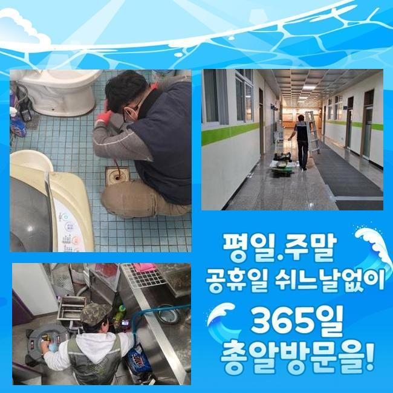
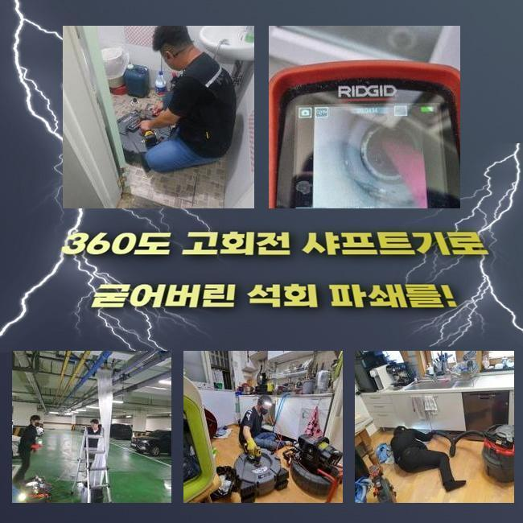
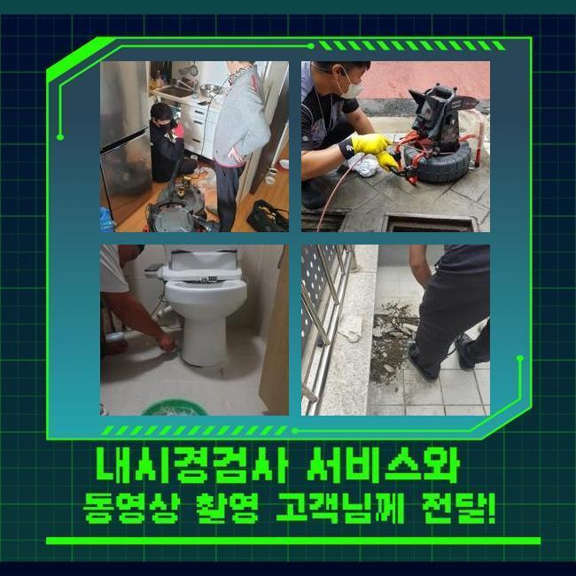
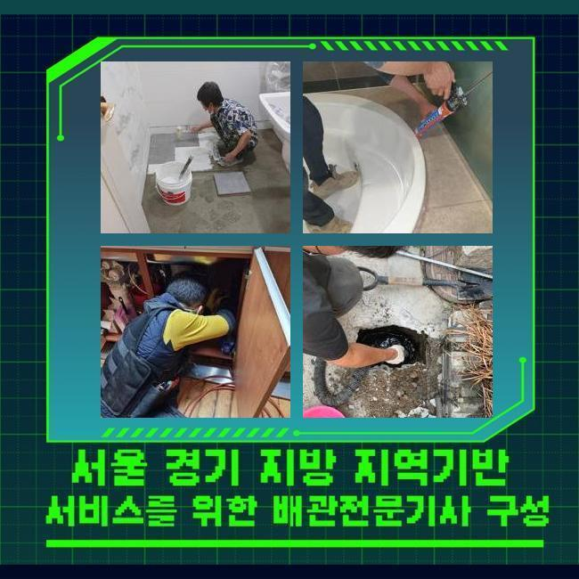
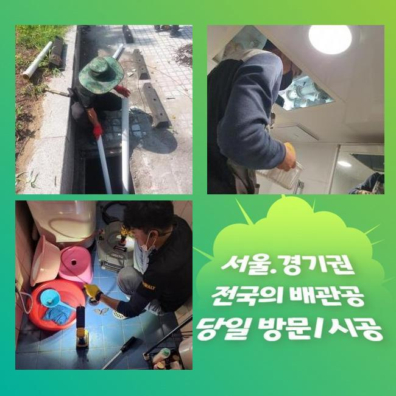
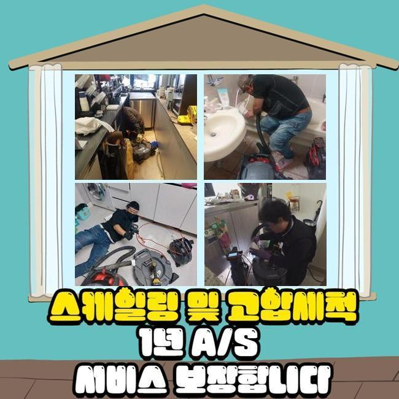
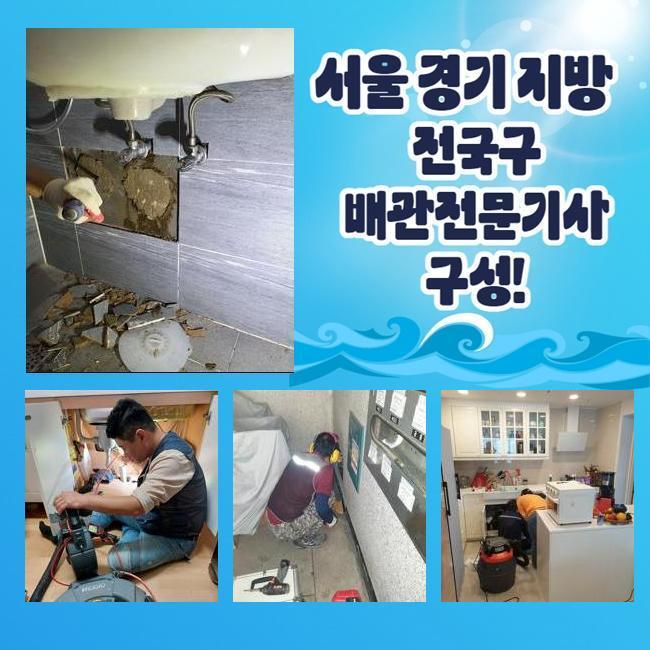

🏠 중구 예관동싱크대역류 중림동 배수구뚫기 누수탐지공사
용인 싱크대막힘 전문 시공 후기

📋 작업 개요
- 위치: 용인
- 서비스 유형: 싱크대막힘, 하수구막힘, 배관막힘, 맨홀막힘, 집수정막힘, 누수수리, 역류해결, 뚫는업체, 배관청소, 고압세척, 설비공사
- 작업 일시: 2024. 10. 24. 13:21
- 업체명: 하수구수사대 (010-5615-2118)
🔍 문제 상황
중구 예관동싱크대역류 중림동 배수구뚫기 누수탐지공사
하수관의 오류를 시작으로 집수정의 물이 범람하면 어떤 식으로 조치해야 할지 오리무중인 분들이 많을겁니다
적절한 대응법을 찾지 못하고 대응책을 강구하지 못하고 결국 흐린 눈을 하다가 상황이 결국 심화되는 때가 대부분이죠
오늘 소개하게 된 현장은 막힘에 따른 불편함으로 커다란 불편함이 터져나오고 있던 소형 아파트였습니다
독립된 주거지가 아니고 여러 세대의 세입자들이 공공 생활을 하는 곳이다보니 여러 설비 문제를 안고 있었습니다
하수구가 불통이 되더라도 시설을 동시에 활용하는 건물이라 어떤 세대 내부에 고장이 벌어진 것이라고 단호하게 결론 내릴 수 없습니다
막힘을 생성한 사유를 추려내는 과정이 오래 투자될 때가 많습니다
감사하게도 해당 작업지에 사시는 분들 모두가 원활한 작업이 이뤄지게 해주셔서 하수관의 복구 프로세스를 조금 더 조속히 마무리하게 됐습니다
집수정에 대한 관측 작업도 펼쳐져야하며 파이프라인 곳곳을 정리하려면 물 이용이 어쩔 수 없이 중단되니 여러 명이 힘들어집니다
건물의 세대원분들께서 생활용수의 공급을 되찾아서 일반적인 활동을 하셔야 하니 공사가 이뤄질 수 있는 시간을 마련해 주시는 게 필요합니다

🔎 원인 분석
💡 전문가 진단: 정밀 진단 장비를 사용하여 슬러지의 고착 여부를 판명하고 타격/세척 작업을 실시했습니다.
사전 공고를 하고 하수구가 비정상적으로 가동하게 된 섹션인 건물의 지하실을 두루 조사하기 시작하였습니다
여러 곳에서 모인 기름 슬러지가 파이프라인에 잔뜩 차올라 있다는 점을 빠르게 인식하게 되었습니다
많은 세대에서 버려지게 되는 전적인 노폐물과 하수는 이 기관을 통과하여 옥외의 집수맨홀로 빠져나가게 됩니다
그러나 이 사이공간이 유분기가 들러붙은 슬러지와 이물질로 꽉 막혀서 원활하게 통과하지 못하고 내부의 고인물이 범람하는 사고까지 빚어지게 된 사태였습니다
여러 주민회의를 거친 뒤에 장고 끝에 수선을 해달라고 의뢰를 맡겨주시게 된겁니다
막힘이 보통 일이 아니라면 예산을 약간 더 쓰더라도 향후 안정감있게 수습해줄 수 있는 출중한 하수구 업체를 골라내는 게 건물의 내구성을 위해서도 도움이 되므로 오래 생각하신 듯 했어요
지하층으로 내려가는 계단식 통로에도 물기가 넘실대며 올라왔다는 사실을 즉시 인식을 하게 되었는데 저희의 내방 직전에 빌라의 입주민분들이 주변부를 청소해 주셨더라고요
이러한 배려심으로 보다 빨리 작업에 착공해서 총괄적인 작업의 기간을 단축하여 주민분들의 불편함도 줄어들었습니다
배관을 확인하는 내시경장비를 관로에 진입을 시켜서 안을 지켜보면서 이번 작업을 무슨 도구로 처리할지에 대한 노선을 만들게 되었습니다
스케일링 도구인 샤프트로 배수구에 축적되어 있는 처치곤란의 오염물질 뭉치들을 잔여물 없이 청소 실시해 주었어요
집수정과 연결된 부품까지 세심하게 진단을 해주고 완벽성을 추구하면서 차례차례 조금씩 없애나가는 게 좋습니다

🔧 작업 과정
하수의 역류가 일어난 하수구 케이스는 보편적으로 기름때로 정복당하게 되었을 컨디션일 수 있으니 세심하게 정화 단계를 실시해야 합니다
작은 단위로 나눠진 덩어리들은 남기지 말고 바깥으로 투출해야만 차후에 비슷한 상황을 경험하지 않을 수 있어요
기름기는 적은 양만 잔여해도 자기들끼리 달라붙기 때문에 같은 막힘이 반복될 위험성을 내포하고 있습니다
집수정의 안쪽까지도 기름 슬러지로 가득 머물러있는 실태를 볼 수가 있었는데요
기름 슬러지의 양이 방대하면 배수장애가 빚어지는 건 당연하고 지독한 악취가 곳곳에 유발될 것이 뻔합니다
막힘의 초기에는 불쾌지수가 높지 않았던 고객님께서도 무더위가 찾아오면 폭발적으로 증가한 악취로 인하여 심각하게 괴로운 마음을 경험하시게 될 것입니다
저희가 처리해 나가는 모습을 주민여러분도 곁에서 들여다 보시면서 관리법도 귀기울여 들으셨어요
하수구로 찌꺼기를 내리지 말고 촘촘한 거름망을 설치하고 수많은 관로들이 배관들에 대한 청소를 자주자주 청결하게 해주기로 약속하는 모습이었어요
이번에 방문하게 된 빌라에 깔려있는 집수정을 몽땅 스케일링 해주었습니다
지어진 지 오래된 건물에 많은 호실이 들어가 있는데 전혀 하수구 관련한 청소를 철두철미하게 받은 경험이 없어서 심각도가 더 짙어진겁니다
오래 묵은 슬러지들도 매우 많은 양이 발생했고 하수구 세척을 하면서도 꽤 오랜 시간을 소비했어요
명확한 결과를 도출해서 신뢰에 보답하기 위해서 여전히 붙은 이물은 없는지 계속해서 체킹을 하면서 청소 서비스를 해드렸습니다
주변 주민분들도 열심히 작업을 끌어가는 모습에서 믿을만 하다고 생각을 하신건지 향후 본인들의 집 설비도 맡기려면 의뢰를 무슨 방도로 하면 되는지에 대해 여러 질문을 하시며 가시는 분도 많으셨어요
집안에 달린 배수로들 전부와 집수정의 범람까지 생겨서 문제던 배관의 세정을 끝처리하는 상황 속에서는 공들여 작업한 결과물로 물 배출이 잘 되는지 통수가 시원스럽게 되나 검사해봅니다
물이 다시 나오도록 조정하고 청소를 끝낸 배수로 속으로 카메라를 부드럽게 밀어넣고 얼마나 유속이 좋은지 확인했네요
깊이가 대단한 집수정이다보니 내시경으로는 저 아래까지 선명하게 인식되지는 않으나 신중하게 곳곳을 스캔해보면 혼탁한 기름덩어리와 하수가 섞인 채로 통쾌하게 빠져나가는 현황을 인지할 수 있었습니다
집수정이 설치된 주변부에 내부의 기름찌꺼기를 모조리 필터링해 줄 수 있는 뜰채를 가져다대서 물을 의도적으로 버려서 미해결 분량까지도 말끔하게 거둬들여서 완성도를 높였습니다


✅ 작업 완료
다수의 세대가 합쳐진 곳은 특정 위치의 배수구에서 문제점이 있는 거라고 꼬집어낼 수 없으므로 여러명이 동시에 배수구의 안전한 사용법에 노력을 기울여야 합니다
직접 현황을 옆에서 보신 주민센터장 소장님도 공고문을 만들어서 저희가 언급한 하수구에 대한 관리법을 모든 사람들이 보게 만들어서 건물 전체가 안전해지는 방안으로 나아가야겠다고 하셨어요
여러 가구에서 활용하다보니 불가피하게 공용 하수 시스템에 장애가 생길 수 있지만 이러한 일들이 최대한 적게 제지할 수 있는 유효한 예방법들이 있습니다
물이 나가는 하수구 출구에 물이 아닌 덩어리들이 새어 들어가지 않게끔 면밀히 주의해야 하며 공동체의 일원들 모두가 적극 참여해야 합니다
집수정까지 마비된 인해서 불안함이 더해지신 분들이라면 빠른 움직임으로 전문업체의 도움으로 탈출하시길 바랍니다




⚠️ 베란다 누수 및 방수 관리 방법
- ✅ 비가 많이 올 때 창틀 주변이나 아래층 천장에 얼룩이 생기는지 정기적으로 확인해 보세요.
- ✅ 우수관 주변 실리콘 마감이 들뜨거나 깨진 틈새가 있는지 손상 여부를 수시로 체크하세요.
- ✅ 베란다 바닥 타일의 줄눈(메지)이 소실되면 그 틈으로 물이 침투하여 누수가 유발됩니다.
- ✅ 누수 의심 증상 발견 시 방치하면 아래층 손실이 커지므로 즉시 전문가의 진단을 받으십시오.
💡 핵심 정리
- 확실한 장비 작업(내시경 점검 및 샤프트 스케일링)으로 원인을 뿌리 뽑습니다.
- 작업 후 1년 이내에 동일한 부위 재발 시 100% 무상 A/S 서비스를 보장합니다.
- 서울 · 경기 · 인천 전 지역에 24시간 언제든 긴급 출동할 수 있도록 항시 대기 중입니다.
❓ 자주 묻는 질문 (FAQ)
🚨 용인 싱크대막힘 문제로 고민이신가요?
정확한 원인 진단과 확실한 시공으로 재발 없는 해결을 약속드립니다.
24시간 긴급 출동 | 서울 · 경기 · 인천 전지역 | 1년 내 재발 시 무상 A/S